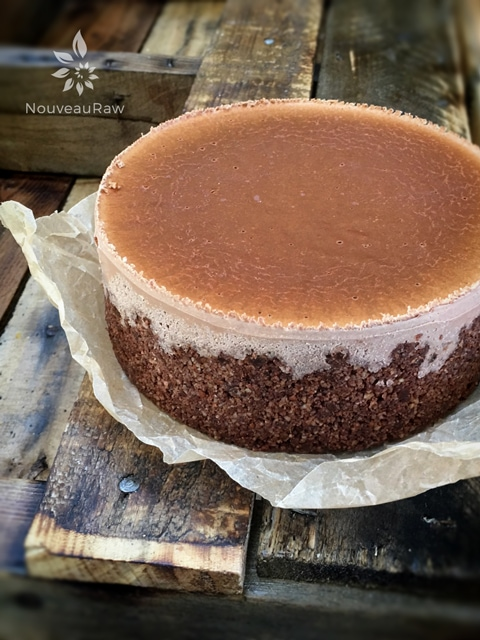
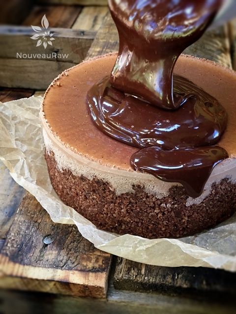
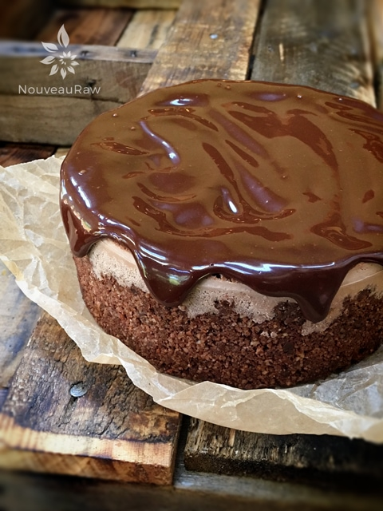
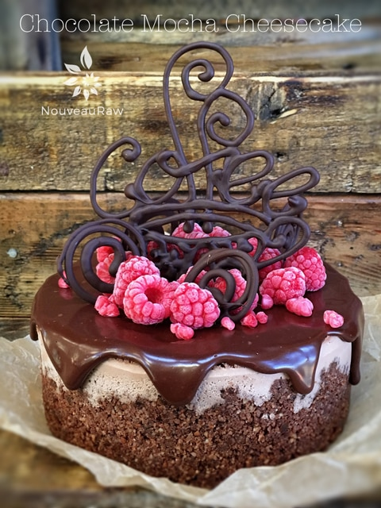

Chocolate Mocha Cheesecake

~ raw, vegan, gluten-free ~
Today’s creation was completely inspired by a dear friend of mine, Gina. She shared with me some time ago that she loved chocolate. Say no more my dear friend…your wish is my inspiration!
This cheesecake turned out amazing. The rich flavor of chocolate danced a beautiful duet with a hint of espresso on the back of your palate. The smooth, creamy, texture was luxurious as your lips swept across the fork. It was an explosion of flavor that just melted in your mouth.
For decoration, I used a raw chocolate recipe that hardens once it is chilled. I put the chocolate into a piping bag, and with a free-hand technique, I created the triangles. I then chilled them in the fridge, placing them on parchment paper, and once hardened I peeled them off. What a gorgeous way to dress up a dessert. This was my first attempt, and I am really excited about playing around with this technique in the future.
Gina and I shared lunch at Zinburger. Their food is fresh and amazing, the atmosphere is welcoming, and the service is top-notch! They were so kind as to keep the cheesecake in their fridge while we ate. I got there before Gina and asked them to keep it a secret.
After we were done eating they brought the cheesecake out as a surprise, and they even put a few candles in it all on their own accord. What a special touch! The waitress was so impressed with the cheesecake that she took a piece and shared it with the staff in the back. We got several compliments and rave reviews on it. Thank you, Gina for creating a wonderful memory for me…your birthday celebration.
yields 8-9″ spring form pan
Chocolate Almond Crust:
- 1 3/4 cup raw almonds, soaked & dehydrated
- 5 Tbsp raw cacao powder
- 1/8 tsp Himalayan pink salt
- 1/4 cup packed Medjool dates
- 1 tsp vanilla extract
Cheesecake batter:
Preparation:
Crust:
- Assemble a Springform pan with the bottom facing up, the opposite way from how it comes assembled.
- This will help you when removing the cheesecake from the pan, not having to fight with the lip.
- Wrap the base with plastic wrap. This will make it easier to remove the pie when done… unless you plan on serving the cake on the bottom of the pan.
- In the food processor, fitted with the “S” blade, pulse the almonds into small pieces.
- Be careful that you don’t over-process the nuts and head towards making a nut butter. Nothing wrong with that… just not our goal at the moment.
- Add the cacao powder and salt, pulsing it together.
- This ensures that the dry ingredients (spices) get well distributed, so you don’t end up with concentrated pockets of flavors.
- Add the dates and vanilla. Process until the batter sticks together.
- Depending on your machine, you may need to stop the unit and scrape the sides down during this process.
- Test the batter by pinching it between your fingers. If it holds, it is ready.
- Distribute the crust evenly on the bottom of the pan, using even and gentle pressure. If you press too hard, it might really stick badly to the base of the pan, making it hard to remove slices. You can either just make the crust on the bottom of the pan, or you can also bring it up the sides. It is up to you.
- Set aside while you make the cheesecake batter.
- Drain the soaked cashews and discard the soak water. Place in a high-speed blender.
- In a high-powered blender combine the; cashews, cold-pressed coffee, almond milk, sweetener, cacao powder, vanilla, and salt.
- Due to the volume and the creamy texture that we are going after, it is important to use a high-powered blender. It could be too taxing on a lower-end model.
- Blend until the filling is creamy smooth. You shouldn’t detect any grit. If you do, keep blending.
- This process can take 2-4 minutes, depending on the strength of the blender. Keep your hand cupped around the base of the blender carafe to feel for warmth. If the batter is getting too warm. Stop the machine and let it cool. Then proceed once cooled.
- With a vortex going in the blender, drizzle in the cacao butter, and then add the lecithin. Blend just long enough to incorporate everything together. Don’t over-process. The batter will start to thicken.
- What is a vortex? Look into the container from the top and slowly increase the speed from low to high, the batter will form a small vortex (or hole) in the center. High-powered machines have containers that are designed to create a controlled vortex, systematically folding ingredients back to the blades for smoother blends and faster processing… instead of just spinning ingredients around, hoping they find their way to the blades.
- If your machine isn’t powerful enough or built to do this, you may need to stop the unit often to scrape the sides down.
- Pour the batter into the pan.
- Gently tap the pan on the counter to remove any air bubbles.
- Chill in the freezer for 4-6 hours and then in the fridge for 12 hours.
- Store the cheesecake in the fridge for 3-5 days or up to 3 months in the freezer. Be sure that they are well sealed to avoid fridge odors.
- For decorating you can make chocolate decorations with this hardening chocolate recipe.

I just removed the cheesecake from the freezer. You can see that the top naturally darkened. If you wish, you can proceed with decorating with Chocolate Ganache frosting.

Pour it directly into the center and let it naturally spread. It might need a little help to get it over the edges.

From there you can leave as is or continue to decorate it.

© AmieSue.com